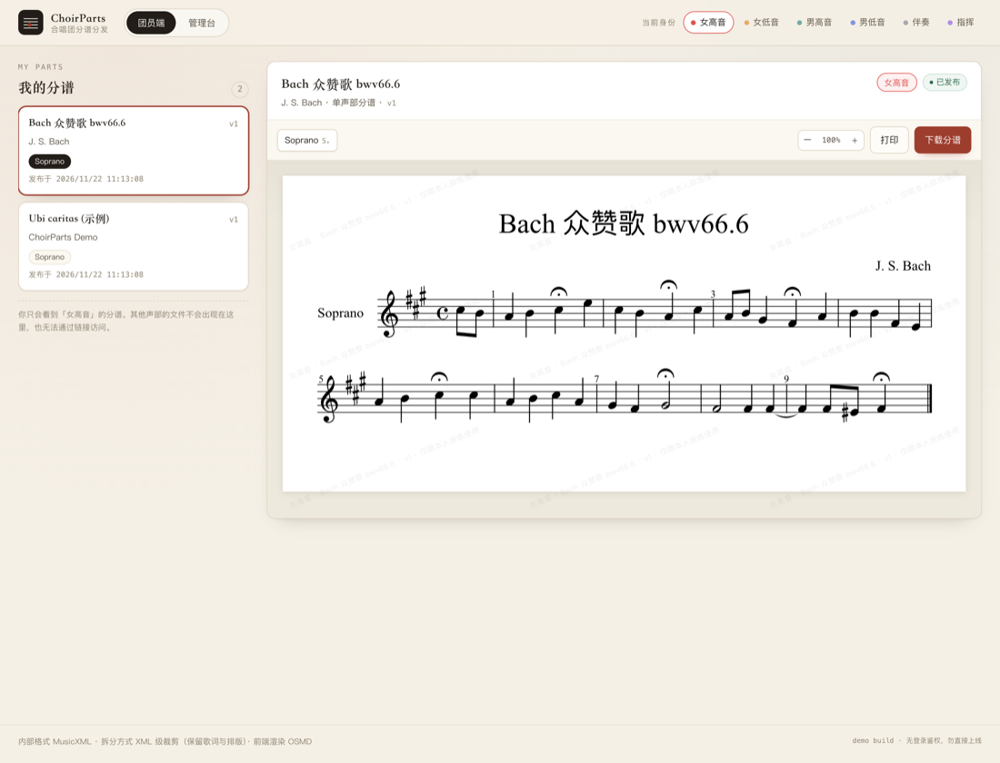
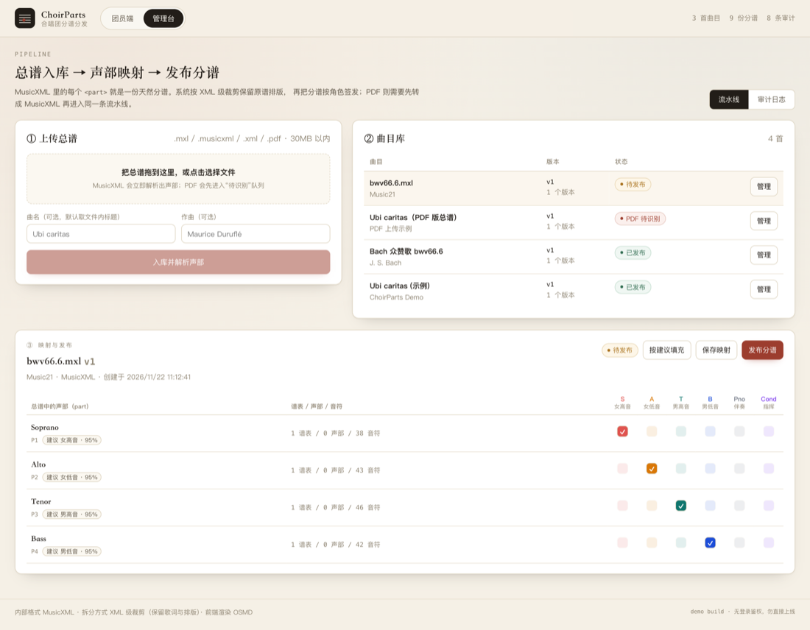
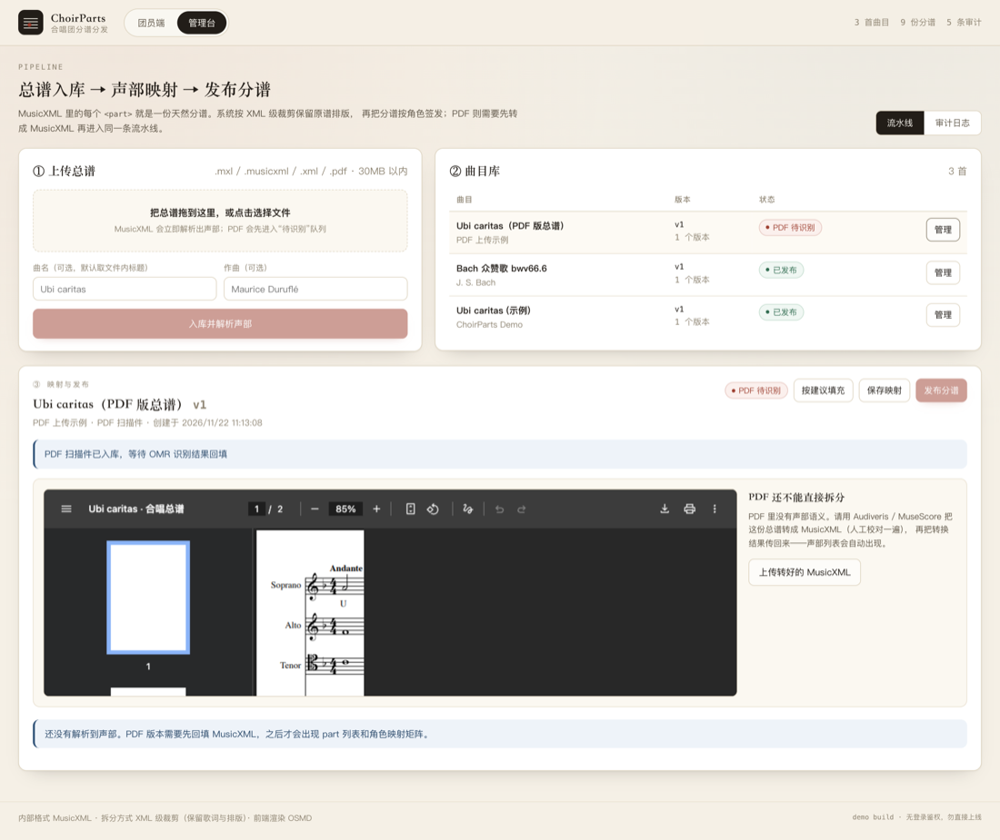
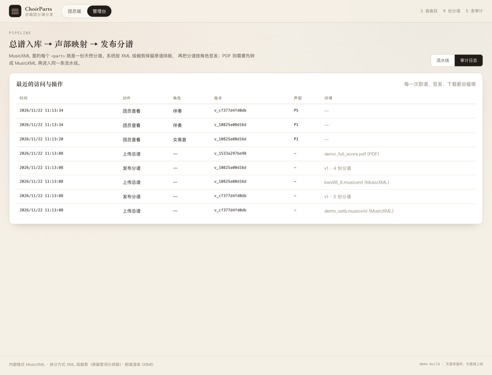

合唱团分谱分发系统的完整开发流程：需求边界 → 架构设计 → 技术选型 → 核心编码 → 测试数据 → 验证展示 → 优化复盘。 每一步都留下可验收的产物，而不是只留下一堆代码。
由输入格式决定：MusicXML 可以，PDF 要 OMR，录音不行。
歌词、力度、连音线要原样保留；拆不开的要敢说"不"。
权限在数据层生效，下载要签名，取谱要留痕。
先定义"不做什么"，再决定"怎么做"；每个阶段都要有一个能拿给别人看的产物。
这句话里藏着三个动作、三种角色、两类文件、一个权限模型。直接开工，大概率会做成"网盘 + 文件夹"。
先把它拆成三段流水线，每段都问清楚：输入是什么、输出是什么、失败了怎么办。
| 管理员 | 上传、映射声部、发布、处理 PDF |
| 团员 | 只看自己声部；打印、下载；不知道别人的存在 |
| 指挥 | 看总谱；确认版本；对排练负责 |
角色不是三个页面，而是三种数据可见性。
把用户的一句话翻译成"输入—处理—输出"三段，是需求分析最便宜、也最有效的一步。
同一个需求，换一种输入，工作量差一个数量级。选型之前，先问一句：你手上到底是什么文件？
MusicXML：<part> 天生分离，拆分是"按标签取子集"，可以全自动。
PDF：没有声部语义，必须先 OMR（Audiveris）再逐句人工校对，只能做"半自动"。
录音：合唱音域重叠、齐唱段落多，SATB 分离准确率不足以进正式链路。
按 part 抽取 → 重排版 → 按角色签发。端到端无人值守。
OMR 输出 MusicXML → 人工校对 → 回填 → 再走同一条流水线。
录音转谱只作为"辅助扒谱"工具，不进正式分发链路。
需求评审时，先做"输入可行性"判断。技术做不到的部分，要变成流程里的一个明确环节，而不是一个隐藏的坑。
| ✓ | MusicXML / MXL 上传与声部解析 |
| ✓ | 角色 × part 映射，发布后按角色取谱 |
| ✓ | XML 级裁剪，保留歌词与力度 |
| ✓ | PDF 入库 + 待识别队列 + 回填入口 |
| ✓ | 版本号、sha256、签名下载、审计日志 |
| ✕ | PDF 直接拆声部（没有声部语义） |
| ✕ | 把"单 part 多声部"自动切开（启发式不可靠） |
| ✕ | 录音转 SATB 分谱 |
| ✕ | 正式账号体系（演示版用身份切换） |
| ✕ | 音频示范播放、印刷级 PDF |
上传 5 个 part 的总谱，30 秒内列出全部声部，名称识别置信度 ≥ 85%。
任意角色取到的分谱，只剩自己的 part，歌词数量与总谱一致。
未发布 / 无权限的资产，接口必须返回 404，而不是"前端不显示"。
边界写清楚，团队才不会在第三周还在争论"要不要做 OMR"；验收标准写清楚，测试才有对照物。
唯一内部格式：MusicXML。PDF 只做入口，绝不做中间格式。
单向数据流：上传 → 草稿 → 发布 → 只读。发布后不能改，只能出新版本。
审计贯穿：取谱、签发、下载都写日志，和业务表同库。
单机 SQLite + 一个进程就能支撑一个合唱团。架构要为当前规模服务，把复杂度留给真正会增长的地方（版本、权限）。
先确定"唯一真相"是什么（这里是 MusicXML + 版本表），再决定分几层。分层的目的是隔离变化，不是画得好看。
version_no · status
source_kind · source_hash
musicxml_path · published_at
草稿可改映射；发布后不可变。改版只能新建版本。
part_id · name · staves
voices · extractable
suggested_role · confidence
解析结果落库，管理员复核的起点，也是"能不能拆"的证据。
role · part_id · path
sha256 · size · created_at
一个角色可有多份（S1/S2）。哈希用来证明"这份谱确实换过"。
角色 × part 多对多。一个人兼两个声部、一个声部多人看，都靠它。
10 分钟有效的下载凭证，过期即失效，不复用。
取谱 / 签发 / 下载 / 发布都留痕，事故时可回溯到人。
版本号解决"是哪一版"，内容哈希解决"是不是同一份"。两者一起，才敢说"你练错了不是我们的锅"。
backend/ ├── app/ │ ├── api.py 16 个 HTTP 接口 │ ├── pipeline.py 入库 · 映射 · 发布 · 取谱 │ ├── store.py 表结构 / 连接 / 审计 │ ├── main.py FastAPI 入口 + 静态托管 │ └── services/ │ ├── musicxml.py 解析 · part 画像 · 裁剪 │ └── role_detect.py 名称 → 角色 + 置信度 ├── tools/ 生成演示谱 / PDF / 语料 / 冒烟 ├── tests/ 14 个测试 └── data/ demo · samples · SQLite · assets frontend/ └── src/components/ ├── MemberView.tsx 团员端 ├── AdminView.tsx 曲目库 + 上传 ├── VersionEditor.tsx 映射矩阵 + 发布 └── ScoreViewer.tsx OSMD 封装 docs/ architecture.md · deck/
| api.py | 接入层：只做校验与转发 |
| pipeline.py | 领域层：业务规则都在这 |
| services/ | 可替换的算法细节 |
| store.py | 存储层：SQL 不外泄 |
| tools/ | 一次性脚本，不进服务进程 |
路由里不写 SQL，算法里不读请求。每一层只依赖下一层的接口，换存储、换渲染引擎都不用动业务。
4,800 行：后端 1,500 · 工具与测试 840 · 前端 2,450。规模不大，但每一层都能单独测试。
别人接手项目时，先看目录就能猜出架构。目录混乱，通常意味着依赖也混乱。
| 方案 | 做法 | 保真度 | 代价 | 结论 |
|---|---|---|---|---|
| music21 解析后重新写出 | parse → 取 part → write('musicxml') | 中：歌词对齐、页面设置常丢 | 依赖重，学习曲线 | 只用于分析（音域、调性） |
| MuseScore CLI 导出分谱 | mscore -P / -o 批量导出 | 高：专业排版 | 需装 GPL 软件；单 part 多声部不可靠 | 留给"印刷级 PDF"后处理 |
| XML 级裁剪（本项目） | 深拷贝总谱，删掉别的 <part>，清分页提示 | 高：只动必须动的节点 | 要自己处理 part-list / part-group | 主链路：可控、可测、无重依赖 |
def _strip_layout(part): for node in list(part.iter()): if _ln(node.tag) != "print": continue for attr in ("new-system", "new-page", "blank-page"): node.attrib.pop(attr, None) for child in list(node): if _ln(child.tag) in ("system-layout", "page-layout", "staff-layout"): node.remove(child) if not len(node) and not node.attrib: node.getparent().remove(node)
music21 把乐谱抽象成对象树，再序列化回 MusicXML。没进对象模型的排版细节就丢了：分页、连谱号、歌词的 syllable 连接、自定义字体……
而裁剪是"原文件减去别人的声部"，没被删的都还在。
判断标准：保真度、依赖体积、可测试性、许可证。
"最知名的库"不在这四项里。
选型的本质是约束匹配：你要的是"保真地删"，不是"完整地重建"。先写清楚目标，再去看库。
| 工具 | 定位 | 许可证 | 在这个项目里 |
|---|---|---|---|
| OSMD | MusicXML → 浏览器 SVG，VexFlow 之上 | MIT | 团员端渲染：加载单声部文件、缩放、打印 |
| VexFlow | 底层符号渲染，需要手写布局 | MIT | 不直接用：做编辑器才值得 |
| abcjs | ABC 文本谱 + 合成器 | MIT | 简谱/练习谱可考虑，总谱表达力不足 |
| Verovio | MEI/MusicXML → SVG/PDF，出版级 | LGPL | 生成演示 PDF；服务端雕刻备选 |
| MuseScore | 桌面排版 + CLI 导出 | GPLv2 | 印刷级分谱的后处理（独立进程调用） |
| Audiveris | PDF/图片 → MusicXML（OMR） | AGPLv3 | PDF 路线的转换工具，流程外 + 人工校对 |
AGPL 的传染性决定了 Audiveris 不能直接链接进服务，只能作为独立进程/离线工具；MuseScore 同理。这也是"PDF 走流程外"的技术原因之一。
课堂提问：如果产品经理说"把 Audiveris 打包进 Docker 一起发"，你要先确认哪三件事？
→ 调用方式、源码开放义务、是否修改过它。
把许可证列进选型表，和性能、依赖一样是一列。商用项目尤其如此。
# 1) 重建 part-list：只留目标 <score-part> new_list = etree.Element("part-list") for sp in kids(part_list, "score-part"): if sp.get("id") in keep: new_list.append(copy.deepcopy(sp)) part_list.getparent().replace(part_list, new_list) # 2) 删除未选中的 <part> for part in list(kids(root, "part")): if part.get("id") not in keep: root.remove(part) # 3) 清掉分页提示，否则总谱宽度会硬塞进单声部页面 for part in kids(root, "part"): _strip_layout(part)
只删 <score-part> 会留下孤立的 group start/stop，MuseScore 打开会报错。做法：整组丢弃。
不清 new-page，会出现"一行两小节、然后一大片空白"，看起来像 bug。
为什么是"二十行"：拆分逻辑本身只有三行，剩下都是边界处理——命名空间、DOCTYPE、编码、part-group。产物能不能被别的软件打开，全在这些细节里。
处理任何结构化文件（XML/JSON/DOCX）的通用原则：复制一份，只删/改必须动的节点，其余原样保留。
# 顺序有意义：先匹配更具体的 _RULES = [ ("CONDUCTOR", r"\bconductor\b|指挥"), ("ACCOMP", r"\bpiano\b|\bpf\b|伴奏|钢琴"), ("S", r"\bsopran\w*|\bs\.?\s?[12]?\b|女高音"), ("A", r"\balto\w*|\ba\.?\s?[12]?\b|女低音"), ("T", r"\btenor\w*|\bt\.?\s?[12]?\b|男高音"), ("B", r"\bbass(es)?\b|\bb\.?\s?[12]?\b|男低音"), ] def suggest_role(name, abbrev=""): for role, pat in _COMPILED: if pat.search(normalize(name)): return role, 0.95 # 置信度交给人工复核 return None, 0.0
Soprano / SOPRANO I / S. / S1
女高音 / 高声部 / Cantus
Piano / Pno. / 伴奏 / Organ
Choir / Voice 1 / Staff 1
最后一行是"识别不出来"的情况——它们必须留给人工，而不是猜。
① Bass → 女高音：缩写规则 s.? 没有左边界，"bass" 里的 s 命中了。修复：全部加 \b。
② Bassoon → 男低音：\bbasso\w* 把巴松管吃了。修复：收紧为 \bbassos?\b。
产品化：置信度 ≥ 0.85 自动预填，其余留空；发布前必须有人在矩阵里看一眼。机器提速，人负责签字。
凡是用规则/模型做判断，都要输出置信度，并设计一个人工确认的入口。不要让"猜"悄悄变成"事实"。
1. 校验：版本是草稿、映射非空、选中的 part 可拆。
2. 对每个 (角色, part) 调 extract_parts，写水印。
3. 落盘 + 算 sha256 + 写 assets 表。
4. 状态改 published，之后映射只读。
5. 写审计：发布了哪一版、几份分谱。
1. GET /api/library/{role} 只返回该角色的资产。
2. GET /api/assets/{id} 读文件，同时写一条 view 审计。
3. 下载另走 POST /sign → 10 分钟 token → /api/dl/{token}。
for row in assignments: role, part_id = row["role"], row["part_id"] watermark = f"{ROLES[role]['name']} · {title} · v{version_no}" xml = mx.extract_parts( doc, [part_id], watermark=watermark, title=title, composer=composer, ) path.write_bytes(xml) digest = hashlib.sha256(xml).hexdigest() conn.execute("INSERT INTO assets ...", (role, part_id, path, digest)) conn.execute("UPDATE versions SET status='published'")
① 权限在 SQL 里生效，不在前端隐藏；
② 下载用短时 token，URL 不能猜；
③ 每次取谱都留痕，泄密可追溯。
"前端藏起来"不是权限，只是 UI。"后端取不到"才是权限。判断标准：直接调接口，能不能拿到别人的数据？
const osmd = new OpenSheetMusicDisplay(host, { autoResize: true, backend: "svg", drawTitle: true, drawComposer: true, drawCredits: false, pageFormat: "A4_P", // ← 实测后改成 Endless }) await osmd.load(xml) // 直接吃 MusicXML 文本 osmd.Zoom = zoom osmd.render() // 卸载时必须销毁，否则 StrictMode 下会渲染两份 return () => osmd.dispose?.()
为什么坚持 SVG：文本可被选中、可被打印、可被截图保存；Canvas 更快，但合唱团要的是"能打印、能存档"。
用 A4_P 时，16 小节被切成"7 + 1"两页，第二页只有一个小节。换成默认 Endless，屏幕连续滚动，断行自然。
旧教程会让你挂 Bravura CDN；OSMD 3 已内置字形。先跑起来看，再决定要不要加依赖。
直接 window.print() 会把整个 App 打印出来；必须用 @media print 隐藏导航、侧栏、工具栏。
坑 4 · 取谱方式：用 fetch 拿文本再 load，才能带角色参数、走审计；直接给 OSMD 一个 URL 会绕过统计。
接入第三方渲染/编辑器时，先做一张"最小验证页"，把默认值一个个试出来，再往业务里搬。
16 小节 · F 大调 4/4 · 5 个 part（SATB + 钢琴双谱表）· 拉丁文歌词 · 3 种时值 · 结尾双纵线
① 版权不确定；② 无法控制变量；③ 出问题时不知道是解析器的锅还是谱的锅。
自制谱可以精确制造边界：没有声部的 part、单谱表多声部、罕见谱号，都能按需生成。
可复现：一行命令重新生成，测试断言永远对得上。生成器本身也是文档，写明"一份合唱总谱至少要有哪些标签"。
BARS = [ # 女高音两个二分音符 + 拉丁文音节；钢琴右手和弦 / 左手低音 dict(s=[("A",4,2), ("A",4,2)], a=[("F",4,4)], t=[("C",4,4)], b=[("F",3,4)], lyr=["U", "bi"], piano=(["F4","A4","C5"], "F2")), dict(s=[("A",4,2), ("A",4,2)], a=[("F",4,4)], t=[("D",4,4)], b=[("D",3,4)], lyr=["ca", "ri"], piano=([...], "D2")), # ... 共 16 小节 ] for spec in PARTS: # 4 个声部 part = _el(root, "part", id=spec["id"]) for idx, bar in enumerate(BARS): measure = _el(part, "measure", number=idx+1) for name, octave, dur in bar[spec["ch"]]: add_pitch(measure, name, octave, dur)
测试数据是"可执行的规格说明"。手写的十行 fixture，胜过下载的一个 200MB 样本库。
tk = verovio.toolkit()
tk.setOptions({ # 传 dict，不是 JSON 字符串
"pageWidth": 2100, "pageHeight": 2970,
"scale": 40, "breaks": "auto",
})
tk.loadData(xml)
svg = tk.renderToSVG(1)
# 把 SVG 按 A4 分页，用 Chrome 打印成 PDF
page.pdf(path=target, format="A4",
print_background=True)
踩坑：setOptions(json.dumps(...)) 报 "Cannot parse JSON"；传入 dict 才生效——先看文档版本，再看教程。
from music21 import corpus score = corpus.parse("bwv66.6") # 巴赫四声部众赞歌 score.write("musicxml", fp=target) # 也支持直接给 MusicXML / MXL 直链 # python tools/fetch_public_score.py --url "..."
CPDL 与 IMSLP 都挂在 Cloudflare 后面，脚本直连返回 403 challenge。结论：公共曲库下载必须留给人工，工具只负责"本地导入 + 校验"。
三条数据的分工：自制谱测边界；PDF 测异步流程；真实语料测"别人的文件"。
任何外部依赖，先花 10 分钟验证"真的能拿到"，再写进排期。可达性不是细节，是风险。
| 层 | 验证什么 |
|---|---|
| 单元（7） | 拆分保真、歌词保留、MXL 解包、多声部拒绝、角色识别 |
| API 链路（7） | 上传→映射→发布→取谱→签名下载→审计，含 PDF 回填与强制发布 |
| 浏览器（2 脚本） | 真 Chrome 打开：乐谱是否真的画出来、矩阵是否可点、上传是否闭环 |
① Bass 被识别成女高音（正则缺左边界）
② 同秒创建导致曲目排序错乱（时间戳只到秒）
③ 只给女高音写歌词，断言失败（fixture 与实现不一致）
冒烟测试的价值：断言"svg path 数量 > 50"。乐谱没渲染时接口全绿、页面全白——只有浏览器能发现。
越往上越慢、越贵；越往下越稳、越快
def test_multi_voice_part_claimed_unsplittable(): doc = mx.parse_score(REDUCTION, "x.xml") part = doc.parts[0] assert part.multi_voice assert not part.extractable # 敢拒绝 assert part.warnings # 给人类看的理由
测试不是"证明代码没 bug"，而是把需求翻译成可执行的断言。"不能拆的谱必须被拒绝"就是一条需求。




演示的顺序就是用户的使用顺序：上传 → 确认声部 → 发布 → 团员取谱。技术亮点放在最后讲。
| 维度 | 现状 | 风险 / 问题 | 下一步（按性价比排序） |
|---|---|---|---|
| 安全 | 角色由前端选择（演示版） | 任何人可改 role 拿别人的谱 | JWT + 资源级校验 + 管理端 RBAC；先做，再谈其他 |
| 体积 | 单个 JS 1.7MB（gzip 463KB） | 首屏慢、弱网打不开 | 动态 import OSMD、manualChunks，首屏可降 60% |
| 渲染 | OSMD 全量重排 | 20 页以上的谱会卡 | 增量渲染 + 骨架屏 + 分页 SVG 缓存 |
| 存储 | SQLite + 本地盘 | 无法多实例、备份靠手 | Postgres + 对象存储 + 迁移脚本 |
| OMR | 人工转换后回填 | 效率低、易漏 | Audiveris 任务队列 + 校对 diff 界面 |
| 排练 | 只有乐谱 | 团员想要"听一下自己声部" | MusicXML→MIDI→Tone.js，支持声部静音 |
鉴权与资源校验。它是"产品"和"玩具"的分界线。
体积与渲染。它直接决定弱网排练室能不能打开。
音频与 OMR。价值高，但依赖外部能力与人工流程。
优化不是"把每项都做到最好"，而是按"用户痛点 × 改造成本"排序，一次只动一个变量。
backend/app · tests · tools 源码与测试
frontend/src + package-lock.json 可复现的依赖
data/demo 演示总谱与 PDF，clone 下来就能跑
docs · screenshots README 与课件的引用
.venv · node_modules · dist 能还原，不必存
data/choir.db · assets · uploads · work 运行时数据
data/samples 一条命令可重新生成
*.pyc · .pytest_cache · .DS_Store 垃圾
顺序很重要：先写 .gitignore，再 git add .。
提交进历史的大文件，删掉也还在历史里。
cd choir-score-hub git init -b main # 先看清单：确认没有 .venv / node_modules git status --short | head git add . git commit -m "feat: 合唱团分谱分发 MVP" git remote add origin git@github.com:<you>/choirparts.git git push -u origin main
① 建仓勾了 README → 首推被拒，要么 rebase，要么强推；
② 先 commit 后补 .gitignore → 依赖目录进了历史；
③ 单文件 > 50MB 被 GitHub 拒绝 → 用 Git LFS，或别放。
本机注意：~ 家目录本身是个 Git 仓库。在家目录里执行 git add . 会把整个家目录加进去 —— 一定要先进项目目录。
仓库的第一次提交决定了它的"洁癖"程度。先定规则（.gitignore、目录结构），再放代码。
git switch main && git pull --ff-only git switch -c feat/sub-role # ... 写代码，跑测试 ... git add -A git commit -m "feat(role): 支持 S1/S2 子声部" git push -u origin HEAD gh pr create --fill git switch main && git pull --ff-only git branch -d feat/sub-role
| feat | 新功能 feat(split): 按 part 导出分谱 |
| fix | 修 bug fix(role): Bass 被识别为女高音 |
| test | 补测试 test(api): 覆盖强制发布 |
| docs | 文档 docs: 补充 Git 工作流 |
| refactor | 重构 refactor(pipeline): 抽水印函数 |
好提交：能独立回滚 · 说清为什么 · 只做一件事。禁止 update、111。
git fetch origin
git rebase origin/main
冲突 → 改文件 → git add → rebase --continue
Commit message 是写给三个月后的自己和同事的；分支是"可丢弃的尝试"，main 是"随时能发的版本"。
☐ 本地 pytest -q 全绿 ☐ 改了行为就补测试
☐ 带截图 / 录屏（UI 改动） ☐ 关联 Closes #12
☐ 数据表变更写了迁移说明 ☐ 没把运行时数据带进 diff
name: ci on: [push, pull_request] jobs: backend: runs-on: ubuntu-latest steps: - uses: actions/checkout@v4 - uses: actions/setup-python@v5 with: {python-version: "3.12"} - run: pip install -r backend/requirements.txt - run: cd backend && python -m pytest -q
main 加保护：Require PR + Require status checks。
"测试没过就合不进去"是规则，不是自觉。
git switch main && git pull --ff-only
git tag -a v0.2.0 -m "PDF 回填 + 分谱水印"
git push origin v0.2.0
gh release create v0.2.0 --generate-notes
回滚：git revert <bad-commit> 生成反向提交，历史可追溯；
热修：从 main 切 fix/xxx，补一条能复现的测试，发 patch 版本。
可回滚才叫版本管理：tag 标记"发出去的代码"，revert 保留"为什么退回来"。
1. 需求阶段先做可行性判断。输入格式决定自动化上限，做不到的要写进流程，而不是藏起来。
2. 架构先定"唯一真相"。MusicXML + 版本表；其余一切（PDF、渲染、导出）都是它的投影。
3. 选型看约束与许可。保真度、依赖、可测性、License——四项都过，才叫合适。
4. 自动化必须留人工闸门。置信度 + 矩阵确认 + "强制发布"逃生口，三者缺一不可。
5. 测试是需求的另一种写法。"不能拆的谱必须被拒绝"写成断言，才不会在下个版本被悄悄改掉。
如果重做一次：先写 3 条端到端测试再写 UI；把"PDF 待识别"从第一天就放进数据模型。
项目不是"一堆代码"，而是一串可验收的中间产物。任何一环缺失，下一个接手的人都会付出代价。
支持 S1 / S2 两个 part 映射到同一个角色，矩阵与取谱界面各要改哪里？
把"人工回填"做成任务队列：上传 PDF → 排队 → 校对 → 回填，状态机怎么画？
MusicXML → MIDI → 浏览器播放，如何只让当前角色出声、其他声部静音？
cd backend && ./run.sh → http://127.0.0.1:8000
.venv/bin/python -m pytest -q → 14 passed
谢谢 —— 问题留到最后。